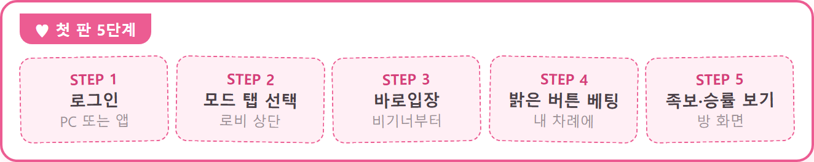
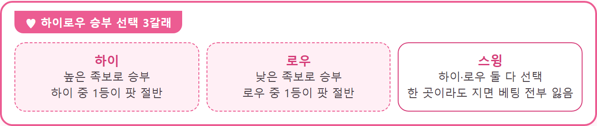

피망포커 하는 법 정리, VIP 적립금 안내까지
이 게임은 확률형 아이템을 포함하고 있습니다.
피망포커는 앱 하나에서 '7포커'·'로우바둑이'·'하이로우'·'홀덤'을 골라 즐길 수 있고, PC(poker.pmang.com)에서도 열리는 포커 게임이에요. 직접 오래 달려 본 후기는 아니고, 처음 하시는 분께 필요한 내용만 모아 봤어요. 처음 하는 법부터 모드별 한 판 흐름, 친구 대전, PC 플레이, 그리고 2026년 11월 1일~11월 30일 VIP 적립금 안내까지 한 번에 짚어 볼게요.
이 게임은 스토어 소개에 '커스텀 UI 설정으로 쉽고 편리한 게임 이용이 가능'하다고 적혀 있고, 방 화면에 콜 금액과 내 족보, 승률이 바로 보이게 짜여 있어서 처음 보는 분도 따라가기 쉬운 구성이에요. 공식 포커가이드에도 게임별 규칙과 족보, 베팅 버튼 설명이 차근차근 정리돼 있습니다.
모드는 로비 상단 탭에서 갈려요.
피망포커 처음 하는 법, 다섯 단계면 돼요
피망포커는 로그인, 모드 선택, '바로입장', 베팅, 족보·승률 확인, 이 다섯 단계로 첫 판을 시작해요. 처음이라면 어떤 모드부터 골라도 되지만, 하이로우가 7포커를 바탕으로 한 모드라서, 7포커로 흐름을 익히고 나서 다른 모드로 넓혀 가는 쪽도 괜찮아요.

- 피망 계정으로 로그인해요. PC는 poker.pmang.com, 모바일은 구글 플레이 앱이에요.
- 로비 상단 탭에서 하고 싶은 모드를 골라요.
- '바로입장'을 누르면 적당한 상대를 찾아 입장시켜 주는데, 비기너 채널은 최소 500만 골드부터예요.
- 내 차례가 오면 밝게 켜진 베팅 버튼 중에서 골라요.
- 방 화면에 뜨는 '내 족보'와 '승률'을 보면서 감을 잡아요.
보유 머니가 500만 골드 밑으로 내려가면 무료리필로 10억 골드가 지급되고, 하루 최대 8회까지 받을 수 있어요.
콜 금액, 족보, 승률 세 군데만 먼저 보면 돼요.
베팅 버튼은 이 표 하나로 정리돼요
| 버튼 | 뜻 |
|---|---|
| 맥스 | 한 판에 걸 수 있는 최대 금액 |
| 풀 | 앞 사람 베팅 + 팟의 100% |
| 하프 | 앞 사람 베팅 + 팟의 50% |
| 쿼터 | 앞 사람 베팅 + 팟의 25% |
| 콜 | 앞 사람과 같은 금액 |
| 삥 | 판의 기본 금액(공식 설명은 '보스만 가능') |
| 체크 | 베팅 없이 넘기기(공식 설명은 '보스만 가능') |
| 따당 | 앞 사람 베팅의 2배 |
| 다이 | 이번 판 포기 |
삥과 체크의 '보스만 가능' 조건은 7포커·로우바둑이·하이로우 버튼 설명에만 있고, 홀덤 버튼 설명에는 없어요. 참고로 홀덤에는 풀 버튼도 없거든요.
7포커·로우바둑이·하이로우·홀덤, 한 판은 어떻게 흘러가요
네 모드 모두 카드를 받고 베팅을 거쳐 족보로 승부를 가리는데, 카드를 받는 순서와 이기는 기준이 서로 달라요. 하나씩 차례로 볼게요.
7포커는 카드 4장을 받아 1장을 버리고 1장을 공개한 뒤, 공개 카드 3장을 더 받고 마지막 1장은 비공개로 받는 '초이스룰'이에요. 단계마다 베팅하고 7장 중 5장으로 만든 족보로 겨루는데, 첫 판단이 '뭘 버리고 뭘 보여줄지'가 되는 구조예요.
이 화면은 한 판의 예시예요.
로우바둑이는 카드 4장을 받고 아침·점심·저녁 세 번 교환하는데, 한 번에 0장(패스)부터 4장까지 바꿀 수 있어요. 이름처럼 낮은 숫자가 유리하고, 무늬와 숫자가 모두 다른 4장이 '메이드'이며 그중 골프·세컨드·써드가 가장 윗자리예요.
교환 장수를 고르는 순간이 이 모드의 핵심이에요.
하이로우는 7포커 진행에 마지막 승부 선택이 붙어요. 하이·로우·스윙 중 하나를 고르고, 하이 중 최고 족보와 로우 중 최저 족보가 팟을 절반씩 나눠 가져요.

스윙은 하이·로우 둘 다 이겨야 하는 선택이라, 한 곳이라도 지면 건 금액을 전부 잃거든요. 그래서 네 모드 중에서도 제일 헷갈리기 쉬운 부분이에요.
홀덤은 내 카드 2장과 모두가 같이 보는 5장을 합쳐 족보를 만들어요. 프리플랍, 플랍, 턴, 리버 순서로 공개되고 단계마다 베팅하며, 딜러 왼쪽 두 명이 스몰·빅 블라인드를 내요. 무늬 비교가 없어서 비길 수 있고, 비기면 승자들이 판돈을 나눠요.
공유 카드가 깔리면 내 2장과 합쳐서 봐요.
족보 순서는 지난번에 정리했던 포커 족보 순서 정리! 피망포커 타짜4 시작 전 필수 공략 글에 자세히 있어요.
친구 대전이랑 PC 플레이도 되나요
피망포커는 스토어에 '친구 대전'이 소개돼 있고, PC(poker.pmang.com)에서도 플레이할 수 있어요.
친구는 '내친구'에서 회원검색으로 초대하는데요, 친구 목록은 PC와 모바일 구분 없이 같은 계정으로 통합 관리돼요. 친구에게 매일 1회 최대 10명까지 선물도 보낼 수 있고요.
친구 초대는 내친구 메뉴에서 시작해요.
PC는 공식 포커가이드에 '권장사항'으로 올라온 사양이 아래 표예요. 최소 사양이 아니라 권장 기준이니 참고만 하시고, 실행이 잘 안 될 때는 가이드의 '클린피망' 안내를 따르면 돼요.
| DirectX | CPU | RAM | 브라우저 |
|---|---|---|---|
| 10 이상 | Core 2 Duo 이상 | 2GB 이상 | Chrome·Edge·Firefox |
PC에서도 같은 계정으로 들어가요.
피망포커 VIP 제도와 적립금, 11월엔 2배 안내가 있어요
피망포커 VIP는 당월 결제 금액에 따라 Ⅰ~Ⅴ 등급이 정해지고, 등급별 혜택 안에 VIP 적립금이 들어 있는 제도예요. 등급표는 2026년 11월 2일 공식 VIP 페이지에 나온 그대로예요.
| 등급 | 결제 금액(당월 합산) |
|---|---|
| VIP Ⅰ | 5만원 이상 ~ 10만원 미만 |
| VIP Ⅱ | 10만원 이상 ~ 30만원 미만 |
| VIP Ⅲ | 30만원 이상 ~ 60만원 미만 |
| VIP Ⅳ | 60만원 이상 ~ 80만원 미만 |
| VIP Ⅴ | 80만원 이상 |
등급은 동일 명의 계정들의 당월 결제 금액을 합산해 실시간으로 정해지고, 혜택은 달성한 달부터 3개월 차 말일까지 이어져요. 혜택은 네 가지예요.
- 아바타 아이템: 등급이 오를수록 쓸 수 있는 종류가 늘어요.
- 777 DAY: 매월 7일·17일·27일에 지정한 계정으로 로그인하면 선물함에 등급별 보상이 와요.
- VIP 전용 쿠폰: 머니 상품 결제 때 쓰면 추가 머니가 선물함으로 오고, 쿠폰 종류도 등급과 함께 늘어요.
- VIP 적립금: 새로 생긴 혜택이라 아래에서 따로 풀어 볼게요.
VIP 적립금은 상점에서 현금 상품을 살 때마다 결제 금액 1원당 정해진 골드가 쌓이는 혜택이에요. 등급이 높을수록, VIP를 연속으로 오래 유지할수록(최대 5개월 차) 적립 골드가 커지고, 적립된 달의 다음 달 1일부터 말일까지만 인출할 수 있어서 그 기간이 지나면 소멸돼요. 내 정보 > VIP 화면에서 지금까지 쌓인 골드를 볼 수 있어요.
2026년 11월 1일~11월 30일에는 VIP 적립금 오픈 기념으로 적립 배수가 상시 2배로 열린다고 해요. 다만 이 내용은 피망 측에서 안내받은 것이고 아직 공식 VIP 페이지에는 이벤트 문구가 올라와 있지 않으니, 참여 전에 VIP 페이지에서 한 번 더 확인해 보세요. VIP가 됐다면 혜택 받을 계정 지정과, 적립된 다음 달 안의 인출만 챙기면 돼요. 기간이 지나면 적립금이 사라지거든요.
적립 현황은 내 정보 메뉴에서 봐요.
자주 묻는 질문
Q. 자유채널에서 이겨도 전적에 들어가나요?
아니요, 자유채널은 보유 머니와 상관없이 입장할 수 있는 대신 전적에 포함되지 않아요. 미션, 경험치, 족보 보너스도 받을 수 없어요.
Q. VIP 혜택을 받을 계정은 어떻게 정하나요?
등급을 달성해도 혜택 받을 계정을 지정하지 않으면 혜택을 쓸 수 없어요. 지정한 뒤에는 그 달 안에 바꿀 수 없고, 지정은 매월 1일에 초기화돼요.
Q. 결제를 취소하면 VIP 적립금은 어떻게 되나요?
취소·환불한 금액만큼 적립금에서 빠져요. 취소로 등급이 달라졌는데 이미 혜택을 썼다면 결제 취소 자체가 안 돼요.
피망포커 하는 법 정리
저라면 비기너 채널에서 '바로입장'으로 한 판 돌려 보면서 콜 금액, 족보, 승률 표시에 눈을 익히는 것부터 시작할 것 같아요. 무료리필이 받쳐 주니 첫 판 부담은 크지 않아 보여요.
이용 전 알아둘 점 피망포커는 만 19세 이상만 이용할 수 있고 청소년 이용불가 게임입니다. 게임 머니는 현금이나 경품 등 가치 있는 어떤 것으로도 교환되지 않으며, 확률형 아이템이 포함돼 있어 결제는 선택입니다.
✔ 피망포커 같이 보기 좋은 내용
· 포커 족보 순서 정리! 피망포커 타짜4 시작 전 필수 공략
· 무료 모바일게임 피망포커 영화 타짜: 벨제붑의 노래 함께 한다
· 피망포커 타짜이벤트 총정리, 홀덤 실전 후기부터 벨제붑의숨은패 참여방법까지(9월 16일 글)
참고한 곳
· 피망포커 VIP 공식 페이지
· 피망포커 공식 포커가이드
· 피망포커 구글 플레이 스토어